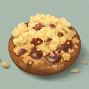

Pečeno dnes ráno
Vlajková řemeslná specialita
Vinohradský borůvkový koláč s tvarohem
Náš vlajkový koláč s vysokým podílem plnotučného jihočeského tvarohu a štědrou vrstvou lesních borůvek. Těsto kyne pomalu 14 hodin a drobenku hněteme výhradně z pravého 84% českého másla.
Jihočeské máslo & tvarohHustá křupavá drobenka
165 Kč/ kus (velká porce)